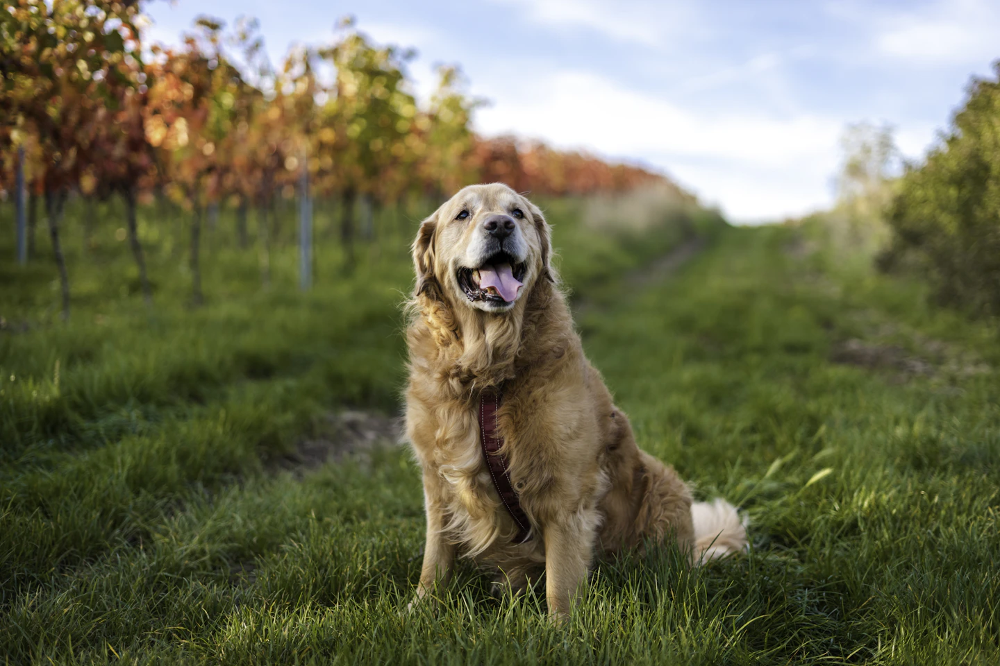

Try a short introduction
Tell the team if your dog warms up slowly, takes breaks on their own, or has only played with familiar dogs.
Small-group dog daycare
Play, sniff breaks, and quiet time for dogs who do best with a little structure. Every new dog starts with a short introduction.
Plan a meet & greet
A sample rhythm for daycare dogs. How much group time a dog gets depends on how comfortable they are.
Easy handoff, water, and time to sniff before joining a group.
Dogs are introduced with their size, energy, and play style in mind.
Time away from the group for water and a reset.
Hear what your dog enjoyed and what we’d try next time.
The first visit gives the team time to observe how your dog approaches a new place and settles after meeting another dog.
Tell the team if your dog warms up slowly, takes breaks on their own, or has only played with familiar dogs.
If your dog struggles to relax around unfamiliar dogs, ask whether one-to-one care or a quieter setting would be a better fit.
Tell us how your dog feels around other dogs. The introduction is a chance to see how they settle in.
A leash, vaccination records, and anything the team should know about your dog’s routine or triggers.
The introduction is a short visit. The team would discuss when to try a longer stay based on what they observe.
At pickup, the team would share how your dog settled, which activities they joined, and what to try on the next visit.
Yes. Note what helps your dog settle and flag any handling concerns before the visit.